FLAMINGLE
Product Design UX Design Data Analysis Persona Scenario Sketching Video Prototype
Flamingle is a service product designed to ease the social event dilemma. I did this project with another 3 students while taking the course Methodology of Interaction Design in KTH University (Sweden, 2018).
This project was done by group, and I would say it is kind of a typical Swedish way of teamwork while studying in KTH. That is, though we did this project by group, we did not just simply assign tasks to different members and finished it separately, instead, each one of the team tried to contribute to the tasks first and then the team would have deep discussions for the tasks and finally finished the tasks together. In this way, all the members experienced and learned all the steps of the process.
By doing this project, I got a better understanding of HCI design methods, and practiced the whole product design process step by step.
Contents
Design Vision
User Groups
Personas
Scenarios
Sketching
Video Prototype
Evaluation
Conclustion
Design Vision
Observation
We did observations mainly in two social events:
One was the Kick-off Event of EIT Digital Master Programme which aims to provide opportunities for all students from different schools to communicate with each other. According to our observation, students who have something in common were more likely to start a new conversation. For example, students found it attractive and interesting to talk to other students who majored in the same track but in different schools. But the problem was that how could they know such information before trying to talk to others?The other one was the Banquet Event held by THS (the student union at KTH) with about 350 international students attending. Before it began, students had to choose their seats and whom they wanted to sit next to. This was helpful to avoid awkwardness but reduced the possibility for making new friends, because people tended to only chat with their friends next to them. But with other strangers sitting around them, it was hard to start new conversations. Even they started by introducing themselves, it was still difficult to keep the conversation flowing. It finally ended up with chatting with old friends or just playing with their smartphones.
Defining the Problem
We found it might be a common dilemma faced by people attending some social events with strangers.
People have the needs to socialize with others, but not everyone is outgoing enough to start talking without feeling awkward, since it is generally difficult to find a suitable topic with strangers that you know nothing about.Data Collection
We designed a survey (https://goo.gl/forms/buaycW8VDyRVVVGW2) to collect users’ (mainly KTH students) feedback about social events to check if our proposed problem is appropriate. Also, we asked their opinions upon different types of information being displayed publicly in social events, so that we could know their concerns about privacy issues and then adjusted our solution accordingly.
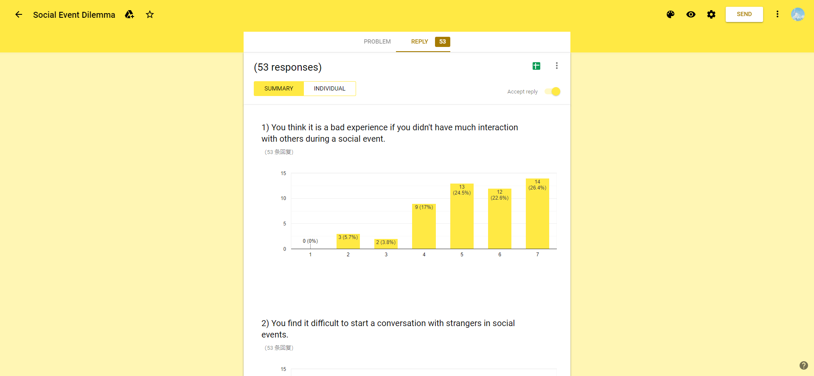Design Vision
The product of our idea is called Flamingle, aiming to ease social event dilemma by providing incentives to increase the possibility of people starting new conversations. The product is mainly based on an information wall which would automatically show people’s information or some art decorations when they pass by.After referring to some social media platforms like Facebook, Instagram and Weibo, we found some personal information such as home city, country, occupation, education background, and interests are useful to help people get to know others. Given the information, people can find more interesting topics about others and get it easier to start new conversations.
User Groups
Data Analysis
- Firstly, we did some general analysis based on the survey results: more than 90% of people we surveyed thought it was a bad experience if they didn’t interact much with others in a social event, and around 75% of people found it difficult to start conversations with strangers in a social event.
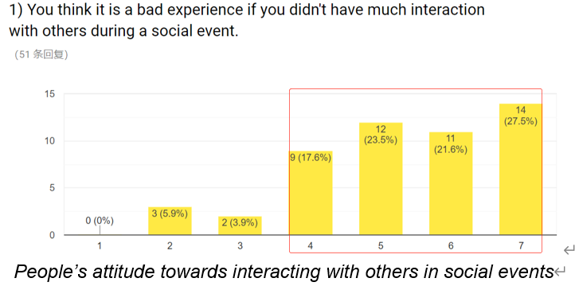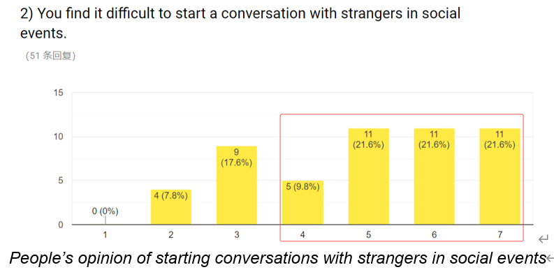
The results shows that people have the willingness to interact with others in social events and they also have trouble starting conversations with strangers in some time.
- Secondly, we surveyed people about their attitudes toward the usefulness of other people’s information for starting new conversations, and their attitudes toward the difficulties of starting conversations with strangers:
Those who find it difficult to start conversations (rank 6-7) have most divergent opinions upon the information; Those who are good at chatting with strangers (rank 2-3, no one ranked 1) have a shared understanding that the information are vital for ice breaking; Last, the rest who rank the difficulty of 4-5 have more neutral opinions upon the usefulness of the information. And then we defined our user groups based on the analysis of the data.
Define User Groups
we divided our users into 3 groups:- People with high sociability, who are more active in social events. They are good at chatting with people and can make good use of information about others to start a conversation.
- People with middle sociability, who could be less active in social events and can try to start conversations with others. They also think it could be helpful to know social information of others before talking to them.
- People with low sociability, who might not be very outgoing and probably be shy in social events. It is difficult for them to start conversations with others if they know nothing about them. Those people are more likely to face social dilemmas.
Characteristics of Each User Group
According to the data, we analyzed the characteristics of each user group to prepare for creating personas and scenarios. Here are the results (Note: “low” refers to rank 1-3, “middle” refers to rank 4-5, “high” refers to rank 6-7):User group 1: People with high sociability
- Not necessary to know others’ name while starting new conversations
- Information of job, country and interest would be useful to start new conversations
- Willing to share information of name, country and interest
User group 2: People with middle sociability
- Information of country and interests will be necessary to start conversations
- People are most willing to share where is he/she from
User group 3: People with low sociability
- People in this group have a more negative attitude to start new conversations and share information
- They are more willing to share information of interests and talk more about interests with other people
Personas
We created two primary personas: Marcus and Christina. Although they were totally two contrary kinds of people, their characteristics are complement to each other. And by using our product, both of them can get what they want.
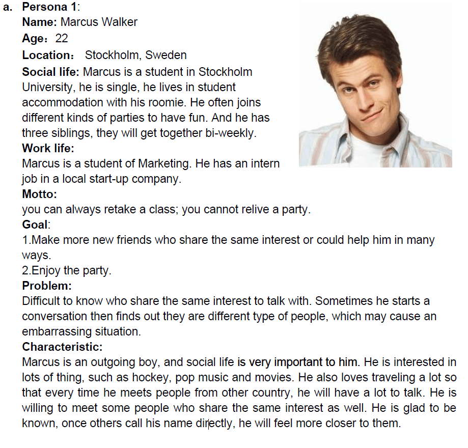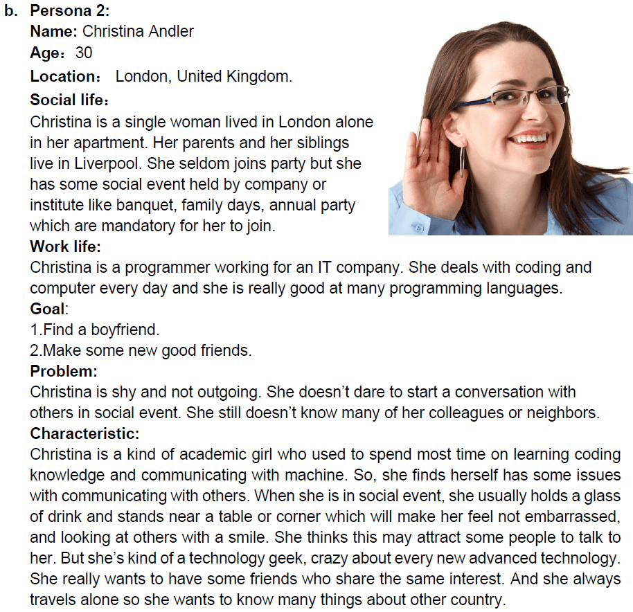
Scenarios
Scenario 1
A new student Tom majored in computer science from US. He is a geek and is currently highly interested in self-driving automobile. He went to a party held by THS alone where many other attendants are also freshman.He tried first to ask people for “where do you come from” to dig some information for further conversation but found it hard to continue, because many of them came from places that he knew little about, and thus had no idea how to continue. If luckily, they came from a place that he knew about, the general sequential question would be “which part of it?”, but in fact everyone is tired of these topics. Since he is not good at generating topics, many conversations just end after asking about hometown.
Soon, he started to play with his phone next to the INFORMATION WALL. and some information about him displayed on the wall, including the tag self-driving car, he is from America and a big fan of Tesla. A while after, a student stood beside him started to talk with him, because this student also a fan of Tesla. Then they exchanged opinions about self-driving car and battery technology. Tom finally thought the party was not boring
Scenario 2
One Friday night, it was definitely a party night for Marcus, he was wondering which party to join when he noticed one in a club, described that “ new social experience for customer, prepared for amazing magic wall in our party hall”, he thought that sounds interesting so he went to join that one.When he arrived, at the entrance of the club, he was asked to scan a QR code and that lead him to a form filling webpage, which required him to fill in some information that he was willing to share with people in the party, such as his hometown, and some of his interests like movie, music, hobbies, etc. After finished that, he walked into the party hall.
At first, he thought it was just a normal party. But after a while, he found in front of each wall, there were some people standing there, while there was some information projected around the position where people stand. For example, there was a girl standing in front of the wall, and there were some animated key words around her head on the wall: “Australia”, “ABBA band”, “TV series”. Marcus thought, “wow, she’s from Australia and that’s where I want to travel in the future! And she loves ABBA! Cool!” Then he decided to talk to that girl since there seemed lots of topics to talk with her.
Marcus: “Hey! I’m Marcus, fan of ABBA too!”
Jane: “Really?? That’s awesome! I’m Jane btw, from Australia.”
Marcus: “I know that,” Marcus pointed to the wall,” that’s pretty cool, right?”
Jane:” Oh yes, it’s amazing, wow you are local here.”
…From the information they got from the wall, they had a very good conversation and exchanged contact number, as well as social media account. Marcus thought they could be good friends, and Jane could be his guide when he traveled to Australia in some day, which is pretty cool.
Sketching
In order to create the prototype of our product, we first tried to conclude the information structure and create the design by sketching . Here are some Key points of the process:
Sketching the information structure of the product
In this part, we discussed lots of ideas about what kind of information we need to collect from people and display on the information wall/screen.Sketching the design ideas of the interface
In this part, we discussed a lot about how to display people’s social information on the wall. We used pen and paper to draw sketches of different ideas and analysed the pros and cons of each sketch. For example, we drew several sketches about the labels which would be displayed near the people’s body on the wall. We discussed whether we should use icons, pictures or texts, and what size of those contents could be appropriate.
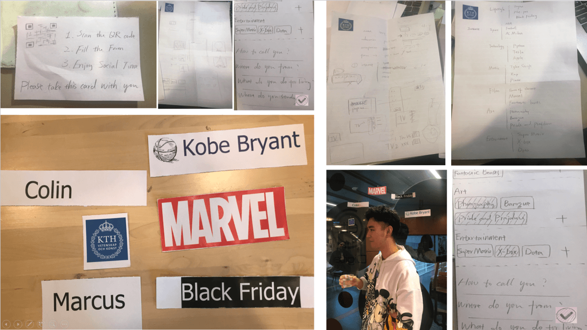
Video Prototype
Considering that it is difficult for us to fully realize the effect of the final product, and in this case video prototype can enable us designers and end users to visualize interface ideas, and get feedback early in the design process. Thus, we chose to use this method to create our prototype. Here are some important steps involved in this process:
- Set up
Firstly, we found a quiet place where we could make the video without disturbance. Then we used a mobile projector to simulate the real system to present users’ information on the wall. Smartphone were used to capture the video. - Role-play
Then we started role-playing. We designers were actors for the video, acting out the interaction scenarios:- Scenario 1
There was a party, Colin imagined that he would talk to many people happily and made new friends at the party, although he is a little bit shy and not a very active guy with high sociality. - Scenario 2
However, the truth is, Colin found it difficult to start conversations with strange people since he is not good at generating topics, and many conversations just ended after asking about hometown. Soon, he got bored and started to play with his phone next to the INFORMATION WALL, and some information tags about him appeared on the wall. - Scenario 3
Justyna saw Coin’s information on the wall and she was quite interested in it, since she found that they had the common interests skating and hiking. Then she came to Colin and started talking about the information on the wall, which showed that the information wall turned out to be very helpful to keep the flow of conversations.
- Scenario 1
- Showing designed interactions
In our video, we tried to show some important designed interactions between users and the information wall. Firstly, we showed the effect of the information tags following users’ position, appearing when the user was close to the wall and disappearing when the user left, which means the real system would track the user’s movement and interact with that. Besides, we showed different styles of information tags presented on the wall, such as pictures, icons or texts. - Editing
After recording each video of the scenarios mentioned above, we edited the videos by using iMovie. In order to show the information about the context, we added background music, as well as some subtitles to inform viewers about what is happening.
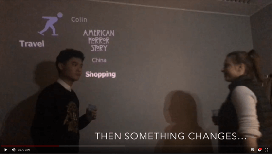 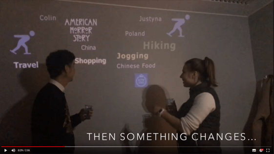
Evaluation
We chose 5 subjects to do the user testing. They have different occupational backgrounds which might lead to diverse living styles. They are also from different places and have different personalities which fit with our 2 main target groups.
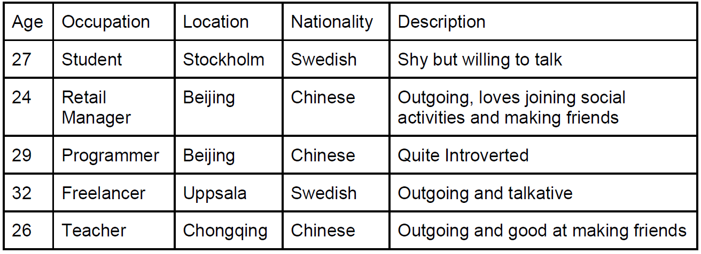
We then sent the video to the subjects and interviewed them for 5 questions after their watching:
Can you understand the idea, and how it works?
How do you feel about it, do you like it?
Would you use it during social events?
Are you willing to share information like in the video?
Any suggestions to improve it?
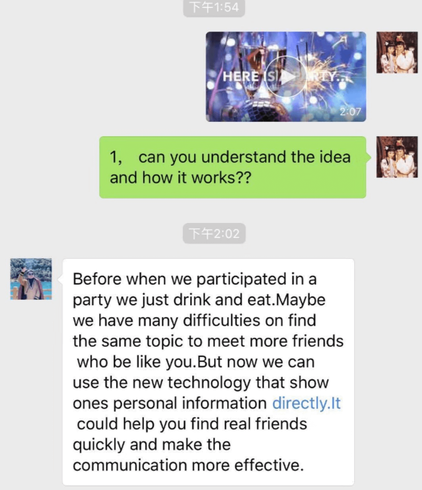 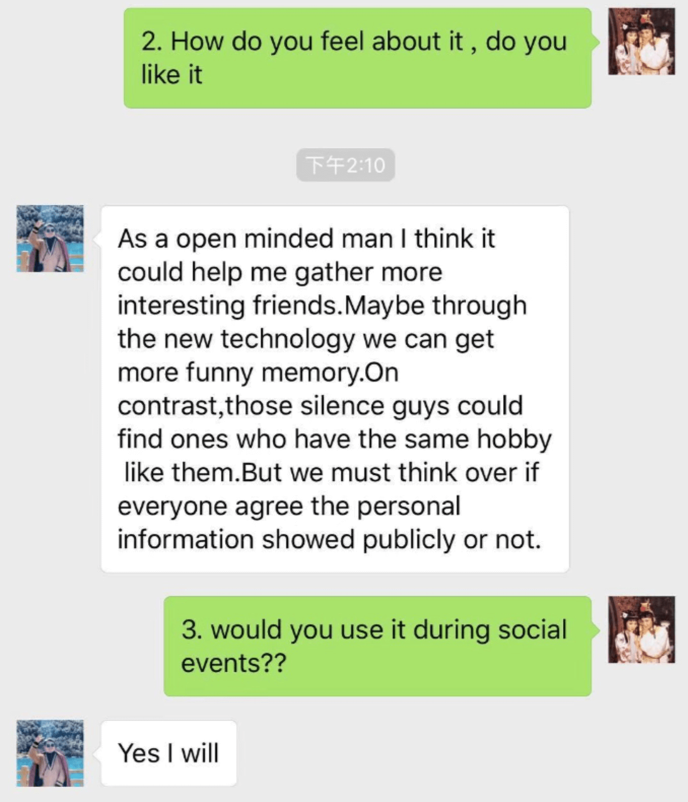
Generally, according to all subjects’ feedback, they like the idea and all of them are willing to use it. But the most important point almost everyone mentioned about is privacy. According to their feedback, users must take control of what will be showed on the wall. Besides, some people mentioned that it might be uncomfortable exposing information on the wall to all participants in the event. This feeling is also related to privacy. To minimize this uncomfortable feeling, we are thinking to adjust tags’ size and make them visible only within 2 meters. This can keep the privacy and meanwhile still attract people to talk.
Conclusion
This project helps me better understand how to use HCI methods for UX design in practice. Observation, interview, and questionnaire can help designers better know the users’ situation and their key needs, while data analysis can help designers underline the characteristics of different user groups. Persona and scenario are useful tools to help designers better describe the target users and know well about how users will behave and think about the product, and they are also good tools to help communicate the design idea in different occasions. There are various kinds of methods for evaluation since it is really a significate step for designers to test and adjust the design solution.